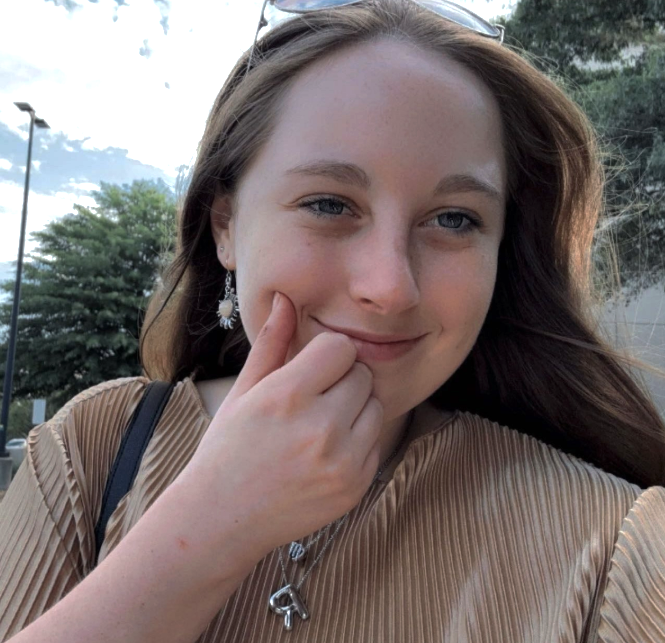

Grant Adams
Grant is an avid video game player and hiker. He has loved coding since he was about 8.
Grant is an avid video game player and hiker. He has loved coding since he was about 8.
Alexa loves playing video games, trying new foods, and drawing. She can lose herself in her work and interests and stay up late.
Addie active on social medias like TikTok, Twitch, and YouTube. She has a hard time finding enough sleep for it all!
RJ loves LOVES coffee and playing video games, traveling, and coding. All of this makes it hard for him to sleep or find the time to.

Riley loves playing video games, reading, and going out with her friends. She also has an awful sleep schedule.
Thomas is a HUGE foodie and loves to eat all types of foods from different cultures. Also, he is a big music listener.